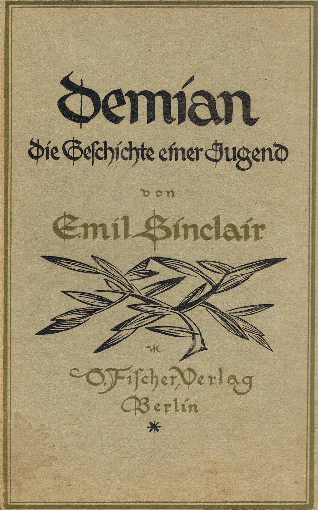

종속형 시트 또는 캐스케이딩 스타일 시트(영어: Cascading Style Sheet)는 마크업 언어가 실제 표시되는 방법을 기술하는 스타일 언어(영어: Style sheet language 스타일 시트 랭귀지[*])로[1], HTML과 XHTML에 주로 쓰이며, XML에서도 사용할 수 있다. W3C의 표준이고, 레이아웃과 스타일을 정의할 때의 자유도가 높다. 기본 파일명[2]은 style.css이다. 마크업 언어(ex: HTML)가 웹사이트의 몸체를 담당한다면 CSS는 옷과 액세서리처럼 꾸미는 역할을 담당한다고 할 수 있다. 즉, HTML 구조는 그대로 두고 CSS 파일만 변경해도 전혀 다른 웹사이트처럼 꾸밀 수 있다.
HTML (HyperText Markup Language) is the most basic building block of the Web. It defines the meaning and structure of web content.1919년 이 책은 처음에는 헤르만 헤세의 본명이 아닌 이야기의 주인공인 '에밀 싱클레어'라는 필명으로 발표되었다. 제1차 세계 대전 이후 엄청난 비난에 시달려 자신의 이름으로 책을 낼 수 없었기 때문이다. 하지만 데미안이 엄청난 판매량을 기록하고 인기를 어마어마하게 얻게 되자 사람들은 이 엄청난 작품을 뚝딱 만들 어낸 듣도 보도 못한 무명의 작가가 누구인지 궁금해했고, 문체로 인해 이것이 헤르만 헤세의 책이라는 것이 알려지자, 1920년 재판부터는 본인의 명의로 발간하였다.
마흔두 살의 헤르만 헤세가 산전수전을 다 겪은 상태에서 새로운 삶을 살기 위하여 처음부터 다시 시작하는 마음으로 집필한 자서전격 소설이라 할 수 있다. 하지만 작품 중반 이후 싱클레어가 조로아스터교나 영지주의 등 고대 종교나 신비주의에 심취하고, 현실과 꿈을 오가거나 예지몽에 빠지는 경험 등은 융학파 분석가인 랑 박사에게서 정신분석을 받았다.